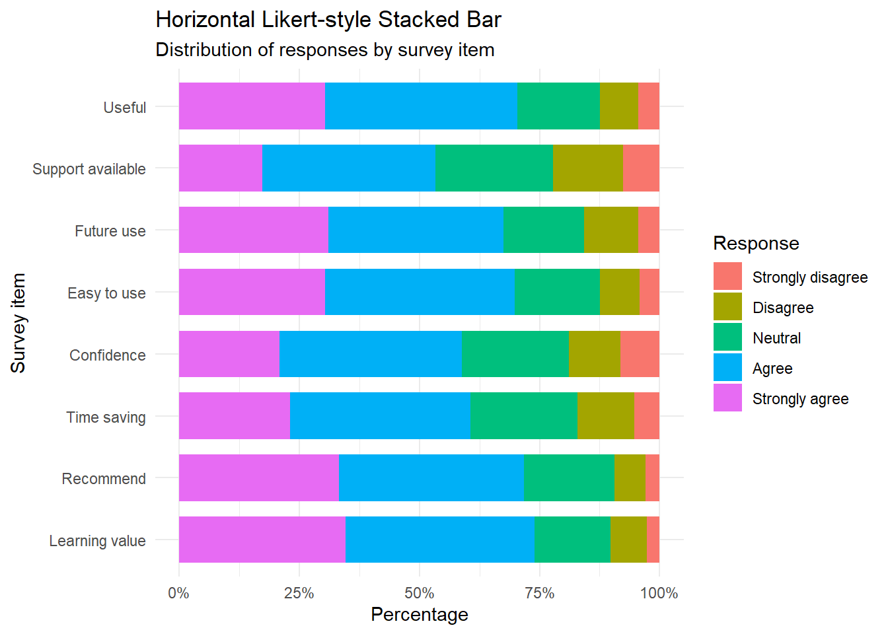
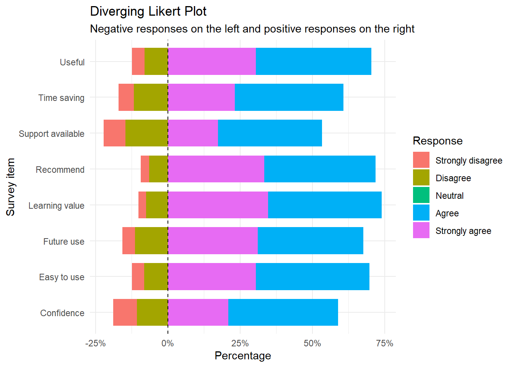
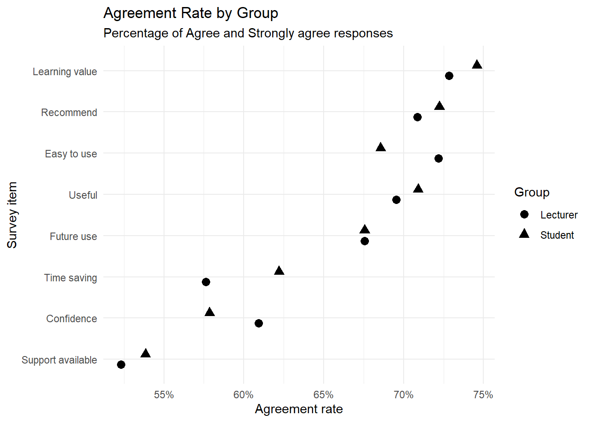
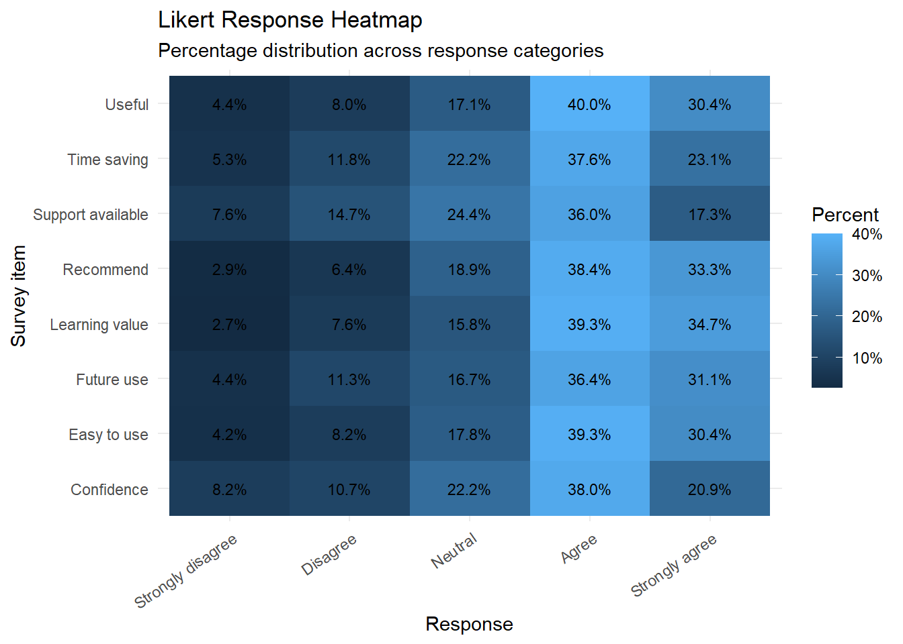
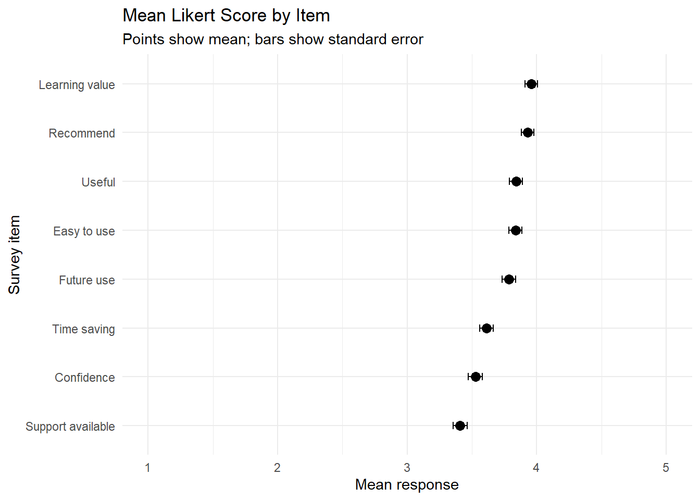
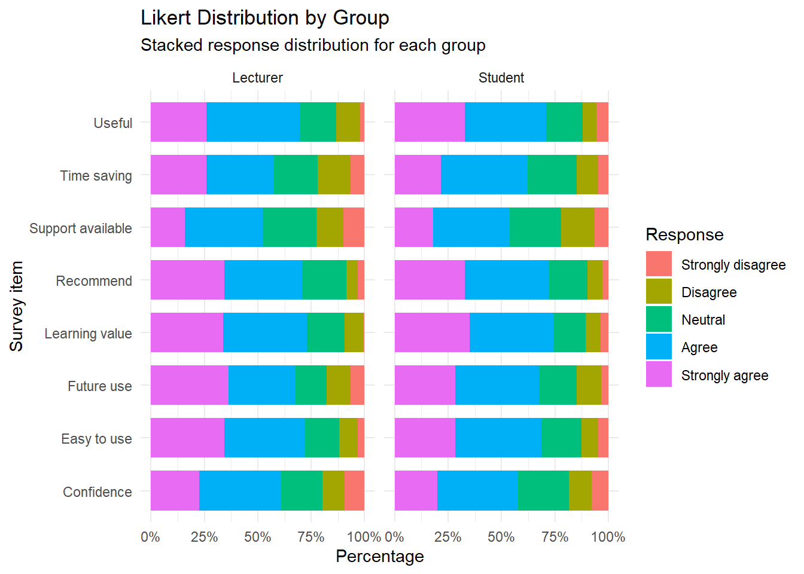
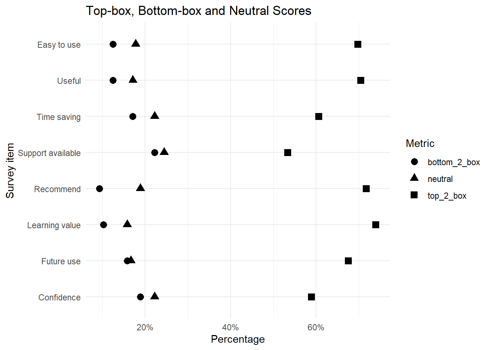
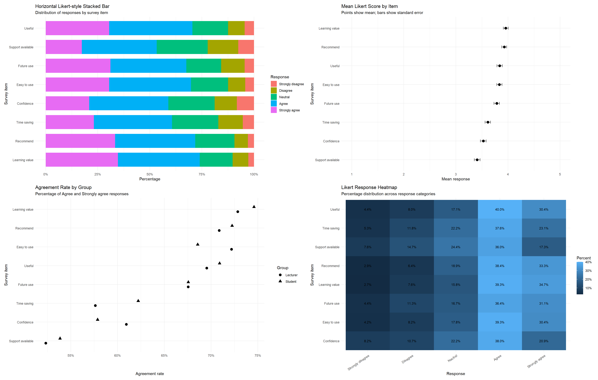

flowchart TD A[Survey Items] --> B[Likert Responses] B --> C[Data Reshaping] C --> D[Frequency and Percent] D --> E[Likert Plots] E --> F[Group Comparison] F --> G[Research Interpretation]
Advanced 08. Phân tích Likert Nâng cao
Advanced Likert Analysis and Visualization
Tổng quan bài học
TipKết quả học tập (Learning Outcomes)
Sau khi hoàn thành bài học này, học viên có thể:
- Hiểu dữ liệu Likert (Likert-scale data)
- Phân biệt Likert item và Likert scale
- Chuẩn bị dữ liệu Likert dạng wide và long
- Tính tần suất và tỷ lệ phản hồi
- Tạo biểu đồ Likert ngang (Horizontal Likert-style Stacked Bar)
- Tạo biểu đồ Likert phân kỳ (Diverging Likert Plot)
- Tạo biểu đồ Likert so sánh nhóm (Grouped Likert Plot)
- Tạo biểu đồ heatmap cho dữ liệu Likert
- Tạo biểu đồ mean score theo item
- Tạo biểu đồ phân bố phản hồi theo nhóm
- Viết kết quả Likert theo chuẩn báo cáo học thuật
- Tránh diễn giải quá mức dữ liệu Likert
NoteLogic bài học (Module Logic)
Bài học này trả lời câu hỏi:
Làm thế nào để phân tích và trực quan hóa dữ liệu khảo sát Likert một cách rõ ràng, đẹp và phù hợp cho báo cáo nghiên cứu?
Quy trình:
Likert Survey Data
↓
Data Cleaning
↓
Wide to Long Format
↓
Response Summary
↓
Likert Visualization
↓
Group Comparison
↓
Academic ReportingMinh họa quy trình phân tích Likert
1. Dữ liệu Likert là gì?
NoteKiến thức nền tảng (Knowledge Notes)
Là gì? (What?)
Dữ liệu Likert là dữ liệu khảo sát thường dùng để đo mức độ đồng ý, hài lòng, nhận thức hoặc thái độ của người trả lời.
Ví dụ thang 5 mức:
1 = Strongly disagree
2 = Disagree
3 = Neutral
4 = Agree
5 = Strongly agreeLikert item và Likert scale khác nhau thế nào?
| Khái niệm | Ý nghĩa |
|---|---|
| Likert item | Một câu hỏi riêng lẻ |
| Likert scale | Tổng hợp nhiều item đo cùng một construct |
Tại sao cần phân tích riêng? (Why?)
Dữ liệu Likert có đặc điểm:
- Thường là ordinal
- Có nhiều item
- Cần trình bày phân bố phản hồi
- Mean đôi khi chưa đủ
- Biểu đồ giúp đọc kết quả dễ hơn bảng số
Khi nào dùng? (When?)
Dùng trong:
- Khảo sát sinh viên
- Khảo sát giảng viên
- Khảo sát khách hàng
- Nghiên cứu chấp nhận công nghệ
- Nghiên cứu hài lòng
- Nghiên cứu hành vi và thái độ
WarningSai lầm thường gặp (Common Mistakes)
Người học thường mắc lỗi:
- Chỉ báo cáo mean cho từng item
- Không trình bày phân bố phản hồi
- Không kiểm tra tỷ lệ neutral
- Gộp item chưa kiểm tra reliability
- Dùng quá nhiều màu gây khó đọc
- Không sắp xếp item theo ý nghĩa
- Diễn giải Likert item như biến liên tục tuyệt đối
2. Chuẩn bị dữ liệu
NoteKiến thức nền tảng (Knowledge Notes)
Module này ưu tiên tạo dữ liệu mô phỏng ổn định để render không phụ thuộc vào cấu trúc workbook.
Nếu workbook có sheet Likert, bạn vẫn có thể thay dữ liệu mô phỏng bằng dữ liệu thật.
Sheet dự kiến:
07_Likert_AdvancedCài đặt package
install.packages("tidyverse")
install.packages("readxl")
install.packages("janitor")
install.packages("gt")
install.packages("patchwork")
install.packages("scales")Nạp package
library(tidyverse)
library(readxl)
library(janitor)
library(gt)
library(patchwork)
library(scales)Thiết lập đường dẫn dữ liệu
advanced_file <- if (file.exists("../data/advance/module7_advanced_data.xlsx")) {
"../data/advance/module7_advanced_data.xlsx"
} else if (file.exists("../data/advanced/module7_advanced_data.xlsx")) {
"../data/advanced/module7_advanced_data.xlsx"
} else if (file.exists("data/advance/module7_advanced_data.xlsx")) {
"data/advance/module7_advanced_data.xlsx"
} else {
"data/advanced/module7_advanced_data.xlsx"
}Tạo dữ liệu Likert mô phỏng
set.seed(123)
n <- 450
likert_data <- tibble(
id = 1:n,
group = sample(
c("Student", "Lecturer"),
n,
replace = TRUE,
prob = c(0.65, 0.35)
),
gender = sample(
c("Female", "Male"),
n,
replace = TRUE
),
q1_easy_to_use = sample(1:5, n, replace = TRUE, prob = c(.05, .10, .18, .40, .27)),
q2_useful = sample(1:5, n, replace = TRUE, prob = c(.04, .08, .15, .42, .31)),
q3_confident = sample(1:5, n, replace = TRUE, prob = c(.07, .12, .22, .38, .21)),
q4_support_available = sample(1:5, n, replace = TRUE, prob = c(.08, .15, .25, .34, .18)),
q5_time_saving = sample(1:5, n, replace = TRUE, prob = c(.06, .10, .18, .39, .27)),
q6_learning_value = sample(1:5, n, replace = TRUE, prob = c(.03, .07, .16, .41, .33)),
q7_future_use = sample(1:5, n, replace = TRUE, prob = c(.04, .09, .17, .36, .34)),
q8_recommend = sample(1:5, n, replace = TRUE, prob = c(.05, .08, .18, .37, .32))
)
glimpse(likert_data)Rows: 450
Columns: 11
$ id <int> 1, 2, 3, 4, 5, 6, 7, 8, 9, 10, 11, 12, 13, 14, 15…
$ group <chr> "Student", "Lecturer", "Student", "Lecturer", "Le…
$ gender <chr> "Male", "Female", "Male", "Male", "Male", "Female…
$ q1_easy_to_use <int> 2, 5, 2, 5, 5, 5, 3, 2, 3, 4, 4, 4, 2, 5, 4, 1, 5…
$ q2_useful <int> 4, 4, 4, 4, 4, 5, 4, 3, 4, 5, 5, 4, 3, 5, 4, 4, 4…
$ q3_confident <int> 4, 2, 4, 5, 5, 4, 1, 3, 2, 3, 4, 3, 5, 5, 3, 3, 5…
$ q4_support_available <int> 1, 1, 3, 5, 4, 4, 5, 3, 4, 1, 5, 2, 3, 4, 5, 4, 4…
$ q5_time_saving <int> 5, 3, 4, 5, 4, 2, 3, 2, 3, 5, 1, 5, 5, 4, 4, 2, 4…
$ q6_learning_value <int> 3, 3, 5, 4, 5, 4, 5, 4, 4, 5, 4, 4, 3, 4, 4, 3, 5…
$ q7_future_use <int> 4, 5, 4, 5, 5, 3, 2, 5, 2, 4, 5, 5, 5, 4, 5, 4, 5…
$ q8_recommend <int> 4, 5, 5, 4, 5, 3, 1, 4, 4, 5, 4, 4, 4, 4, 3, 3, 3…
ImportantỨng dụng trong nghiên cứu (Research Application)
Dữ liệu mô phỏng này có thể đại diện cho khảo sát về:
- Mức độ chấp nhận công nghệ
- Trải nghiệm học tập
- Đánh giá công cụ số
- Mức độ hài lòng với khóa học
- Ý định sử dụng trong tương lai
3. Chuẩn bị dữ liệu dạng long
TipKết quả học tập (Learning Outcomes)
Sau phần này, học viên có thể:
- Chuyển dữ liệu từ wide sang long
- Gắn nhãn phản hồi Likert
- Chuẩn bị dữ liệu cho
ggplot2 - Tạo biến item label dễ đọc
NoteKiến thức nền tảng (Knowledge Notes)
Wide format là gì?
Mỗi item là một cột.
Long format là gì?
Mỗi dòng là một phản hồi cho một item.
ggplot2 thường làm việc tốt hơn với long format.
Chuyển dữ liệu sang long format
response_levels <- c(
"Strongly disagree",
"Disagree",
"Neutral",
"Agree",
"Strongly agree"
)
likert_long <- likert_data |>
pivot_longer(
cols = starts_with("q"),
names_to = "item",
values_to = "response_value"
) |>
mutate(
response = factor(
response_value,
levels = 1:5,
labels = response_levels
),
item_label = case_when(
item == "q1_easy_to_use" ~ "Easy to use",
item == "q2_useful" ~ "Useful",
item == "q3_confident" ~ "Confidence",
item == "q4_support_available" ~ "Support available",
item == "q5_time_saving" ~ "Time saving",
item == "q6_learning_value" ~ "Learning value",
item == "q7_future_use" ~ "Future use",
item == "q8_recommend" ~ "Recommend",
TRUE ~ item
)
)
glimpse(likert_long)Rows: 3,600
Columns: 7
$ id <int> 1, 1, 1, 1, 1, 1, 1, 1, 2, 2, 2, 2, 2, 2, 2, 2, 3, 3, 3…
$ group <chr> "Student", "Student", "Student", "Student", "Student", …
$ gender <chr> "Male", "Male", "Male", "Male", "Male", "Male", "Male",…
$ item <chr> "q1_easy_to_use", "q2_useful", "q3_confident", "q4_supp…
$ response_value <int> 2, 4, 4, 1, 5, 3, 4, 4, 5, 4, 2, 1, 3, 3, 5, 5, 2, 4, 4…
$ response <fct> Disagree, Agree, Agree, Strongly disagree, Strongly agr…
$ item_label <chr> "Easy to use", "Useful", "Confidence", "Support availab…Kiểm tra số lượng phản hồi
likert_long |>
count(item_label, response)Phần lớn biểu đồ Likert nên bắt đầu từ dữ liệu dạng long.
Cấu trúc tối thiểu cần có:
id
group
item
response4. Bảng tóm tắt phản hồi
TipKết quả học tập (Learning Outcomes)
Sau phần này, học viên có thể:
- Tính số lượng phản hồi theo item
- Tính tỷ lệ phần trăm theo item
- Tạo bảng tóm tắt đẹp bằng
gt
NoteKiến thức nền tảng (Knowledge Notes)
Trước khi vẽ biểu đồ, nên tạo bảng tần suất và phần trăm.
Điều này giúp kiểm tra dữ liệu và tránh lỗi trực quan hóa.
Tính tần suất và phần trăm
likert_summary <- likert_long |>
count(item_label, response) |>
group_by(item_label) |>
mutate(
percent = n / sum(n),
percent_label = percent(percent, accuracy = 0.1)
) |>
ungroup()
likert_summaryBảng tóm tắt
likert_summary |>
select(item_label, response, n, percent_label) |>
gt() |>
tab_header(
title = "Likert Response Summary",
subtitle = "Frequency and percentage by item"
)| Likert Response Summary | |||
| Frequency and percentage by item | |||
| item_label | response | n | percent_label |
|---|---|---|---|
| Confidence | Strongly disagree | 37 | 8.2% |
| Confidence | Disagree | 48 | 10.7% |
| Confidence | Neutral | 100 | 22.2% |
| Confidence | Agree | 171 | 38.0% |
| Confidence | Strongly agree | 94 | 20.9% |
| Easy to use | Strongly disagree | 19 | 4.2% |
| Easy to use | Disagree | 37 | 8.2% |
| Easy to use | Neutral | 80 | 17.8% |
| Easy to use | Agree | 177 | 39.3% |
| Easy to use | Strongly agree | 137 | 30.4% |
| Future use | Strongly disagree | 20 | 4.4% |
| Future use | Disagree | 51 | 11.3% |
| Future use | Neutral | 75 | 16.7% |
| Future use | Agree | 164 | 36.4% |
| Future use | Strongly agree | 140 | 31.1% |
| Learning value | Strongly disagree | 12 | 2.7% |
| Learning value | Disagree | 34 | 7.6% |
| Learning value | Neutral | 71 | 15.8% |
| Learning value | Agree | 177 | 39.3% |
| Learning value | Strongly agree | 156 | 34.7% |
| Recommend | Strongly disagree | 13 | 2.9% |
| Recommend | Disagree | 29 | 6.4% |
| Recommend | Neutral | 85 | 18.9% |
| Recommend | Agree | 173 | 38.4% |
| Recommend | Strongly agree | 150 | 33.3% |
| Support available | Strongly disagree | 34 | 7.6% |
| Support available | Disagree | 66 | 14.7% |
| Support available | Neutral | 110 | 24.4% |
| Support available | Agree | 162 | 36.0% |
| Support available | Strongly agree | 78 | 17.3% |
| Time saving | Strongly disagree | 24 | 5.3% |
| Time saving | Disagree | 53 | 11.8% |
| Time saving | Neutral | 100 | 22.2% |
| Time saving | Agree | 169 | 37.6% |
| Time saving | Strongly agree | 104 | 23.1% |
| Useful | Strongly disagree | 20 | 4.4% |
| Useful | Disagree | 36 | 8.0% |
| Useful | Neutral | 77 | 17.1% |
| Useful | Agree | 180 | 40.0% |
| Useful | Strongly agree | 137 | 30.4% |
WarningSai lầm thường gặp (Common Mistakes)
Không nên vẽ biểu đồ trước khi kiểm tra bảng tóm tắt.
Nếu tổng phần trăm theo item không gần 100%, có thể dữ liệu đang sai format hoặc có missing values.
5. Horizontal Likert-style stacked bar
TipKết quả học tập (Learning Outcomes)
Sau phần này, học viên có thể:
- Tạo biểu đồ Likert ngang
- Hiểu khi nào dùng stacked bar
- Diễn giải phân bố phản hồi theo item
NoteKiến thức nền tảng (Knowledge Notes)
Là gì? (What?)
Horizontal Likert-style stacked bar là biểu đồ thanh ngang xếp chồng, thể hiện tỷ lệ phản hồi cho từng mức Likert.
Khi nào dùng? (When?)
Dùng khi muốn trình bày phân bố phản hồi cho nhiều item trong một hình.
Ưu điểm
- Dễ đọc
- Phù hợp báo cáo khảo sát
- So sánh item trực quan
- Tốt hơn bảng số dài
Biểu đồ Likert ngang
fig_likert_stacked <- ggplot(
likert_summary,
aes(
x = percent,
y = reorder(item_label, percent),
fill = response
)
) +
geom_col(width = 0.75) +
scale_x_continuous(labels = percent_format()) +
labs(
title = "Horizontal Likert-style Stacked Bar",
subtitle = "Distribution of responses by survey item",
x = "Percentage",
y = "Survey item",
fill = "Response"
) +
theme_minimal()
fig_likert_stacked
ImportantDiễn giải kết quả (Interpretation)
Biểu đồ này giúp trả lời:
Item nào có tỷ lệ Agree/Strongly agree cao nhất?
Item nào có nhiều Neutral?
Item nào có nhiều Disagree?6. Diverging Likert plot
TipKết quả học tập (Learning Outcomes)
Sau phần này, học viên có thể:
- Tạo biểu đồ Likert phân kỳ
- Đặt nhóm không đồng ý bên trái
- Đặt nhóm đồng ý bên phải
- Dùng đường 0 để tăng khả năng đọc
NoteKiến thức nền tảng (Knowledge Notes)
Là gì? (What?)
Diverging Likert plot đặt phản hồi tiêu cực bên trái và phản hồi tích cực bên phải.
Khi nào dùng? (When?)
Dùng khi muốn làm nổi bật cán cân giữa không đồng ý và đồng ý.
Cách xử lý Neutral
Có nhiều cách:
- Đặt Neutral ở giữa
- Không đưa Neutral vào phần phân kỳ
- Tách Neutral thành nhóm riêng
Trong module này, ta đặt Neutral ở giữa với giá trị 0 để đơn giản hóa.
Chuẩn bị dữ liệu phân kỳ
likert_diverging <- likert_summary |>
mutate(
percent_signed = case_when(
response %in% c("Strongly disagree", "Disagree") ~ -percent,
response == "Neutral" ~ 0,
TRUE ~ percent
)
)Biểu đồ Likert phân kỳ
fig_likert_diverging <- ggplot(
likert_diverging,
aes(
x = percent_signed,
y = item_label,
fill = response
)
) +
geom_col(width = 0.75) +
geom_vline(xintercept = 0, linetype = "dashed") +
scale_x_continuous(labels = percent_format()) +
labs(
title = "Diverging Likert Plot",
subtitle = "Negative responses on the left and positive responses on the right",
x = "Percentage",
y = "Survey item",
fill = "Response"
) +
theme_minimal()
fig_likert_diverging
WarningSai lầm thường gặp (Common Mistakes)
Không nên dùng diverging plot nếu người đọc chưa quen và không có chú thích rõ.
Cần ghi rõ:
Negative percentages indicate disagreement.7. Grouped Likert plot
TipKết quả học tập (Learning Outcomes)
Sau phần này, học viên có thể:
- So sánh phản hồi Likert giữa hai nhóm
- Tính tỷ lệ đồng ý theo nhóm
- Vẽ grouped bar chart
- Diễn giải khác biệt nhóm
NoteKiến thức nền tảng (Knowledge Notes)
Trong nhiều nghiên cứu, ta không chỉ hỏi:
Tỷ lệ đồng ý là bao nhiêu?mà còn hỏi:
Nhóm nào đồng ý nhiều hơn?Ví dụ:
- Student vs Lecturer
- Male vs Female
- Low experience vs High experience
- Campus A vs Campus B
Tính tỷ lệ Agree/Strongly agree theo nhóm
agreement_by_group <- likert_long |>
mutate(
agree = response %in% c("Agree", "Strongly agree")
) |>
group_by(group, item_label) |>
summarise(
agreement_rate = mean(agree),
.groups = "drop"
)
agreement_by_groupBiểu đồ so sánh nhóm
fig_group_agreement <- ggplot(
agreement_by_group,
aes(
x = agreement_rate,
y = reorder(item_label, agreement_rate),
shape = group
)
) +
geom_point(size = 3, position = position_dodge(width = 0.5)) +
scale_x_continuous(labels = percent_format()) +
labs(
title = "Agreement Rate by Group",
subtitle = "Percentage of Agree and Strongly agree responses",
x = "Agreement rate",
y = "Survey item",
shape = "Group"
) +
theme_minimal()
fig_group_agreement
ImportantDiễn giải kết quả (Interpretation)
Biểu đồ này giúp xác định item nào có sự khác biệt lớn giữa nhóm.
Tuy nhiên, nếu muốn kiểm định thống kê, cần dùng mô hình phù hợp như ordinal regression hoặc group comparison test.
8. Likert heatmap
TipKết quả học tập (Learning Outcomes)
Sau phần này, học viên có thể:
- Tạo heatmap cho phản hồi Likert
- Trình bày tỷ lệ phản hồi theo item và response category
- Dùng heatmap cho báo cáo tổng quan khảo sát
NoteKiến thức nền tảng (Knowledge Notes)
Heatmap rất hữu ích khi có nhiều item và nhiều mức phản hồi.
Mỗi ô thể hiện tỷ lệ phần trăm của một response category trong một item.
Heatmap phản hồi
fig_likert_heatmap <- ggplot(
likert_summary,
aes(
x = response,
y = item_label,
fill = percent
)
) +
geom_tile() +
geom_text(aes(label = percent_label), size = 3) +
scale_fill_continuous(labels = percent_format()) +
labs(
title = "Likert Response Heatmap",
subtitle = "Percentage distribution across response categories",
x = "Response",
y = "Survey item",
fill = "Percent"
) +
theme_minimal() +
theme(
axis.text.x = element_text(angle = 35, hjust = 1)
)
fig_likert_heatmap
Heatmap phù hợp khi:
- Có nhiều item
- Muốn xem pattern tổng thể
- Muốn phát hiện item có nhiều neutral hoặc disagreement
- Cần trình bày compact
9. Mean score plot
TipKết quả học tập (Learning Outcomes)
Sau phần này, học viên có thể:
- Tính mean score cho từng Likert item
- Vẽ mean score plot
- Hiểu giới hạn của mean với dữ liệu ordinal
NoteKiến thức nền tảng (Knowledge Notes)
Mean score thường được dùng trong báo cáo khảo sát.
Tuy nhiên, cần nhớ rằng Likert item là ordinal. Mean có thể hữu ích trong thực hành, nhưng không nên là bằng chứng duy nhất.
Tính mean score
mean_score <- likert_long |>
group_by(item_label) |>
summarise(
mean_response = mean(response_value),
sd_response = sd(response_value),
se_response = sd_response / sqrt(n()),
.groups = "drop"
)
mean_scoreMean score plot
fig_mean_score <- ggplot(
mean_score,
aes(
x = mean_response,
y = reorder(item_label, mean_response)
)
) +
geom_point(size = 3) +
geom_errorbarh(
aes(
xmin = mean_response - se_response,
xmax = mean_response + se_response
),
height = 0.15
) +
scale_x_continuous(limits = c(1, 5), breaks = 1:5) +
labs(
title = "Mean Likert Score by Item",
subtitle = "Points show mean; bars show standard error",
x = "Mean response",
y = "Survey item"
) +
theme_minimal()
fig_mean_score
WarningSai lầm thường gặp (Common Mistakes)
Không nên chỉ báo cáo mean score mà bỏ qua phân bố phản hồi.
Hai item có cùng mean có thể có phân bố rất khác nhau.
10. Distribution by group
TipKết quả học tập (Learning Outcomes)
Sau phần này, học viên có thể:
- Vẽ phân bố phản hồi theo nhóm
- Dùng facet để tách nhóm
- So sánh pattern giữa nhóm
Faceted Likert bar by group
likert_group_summary <- likert_long |>
count(group, item_label, response) |>
group_by(group, item_label) |>
mutate(
percent = n / sum(n)
) |>
ungroup()
fig_faceted_group <- ggplot(
likert_group_summary,
aes(
x = percent,
y = item_label,
fill = response
)
) +
geom_col(width = 0.75) +
facet_wrap(~ group) +
scale_x_continuous(labels = percent_format()) +
labs(
title = "Likert Distribution by Group",
subtitle = "Stacked response distribution for each group",
x = "Percentage",
y = "Survey item",
fill = "Response"
) +
theme_minimal()
fig_faceted_group
ImportantDiễn giải kết quả (Interpretation)
Faceted plot giúp người đọc thấy liệu pattern phản hồi có giống nhau giữa các nhóm hay không.
Nếu khác biệt lớn, có thể cần phân tích sâu hơn bằng kiểm định hoặc mô hình.
11. Top-box và bottom-box analysis
TipKết quả học tập (Learning Outcomes)
Sau phần này, học viên có thể:
- Tính top-box score
- Tính bottom-box score
- Biết khi nào dùng các chỉ số này trong khảo sát
NoteKiến thức nền tảng (Knowledge Notes)
Top-box là gì?
Top-box thường là tỷ lệ chọn mức cao nhất, ví dụ:
Strongly agreehoặc top-2 box:
Agree + Strongly agreeBottom-box là gì?
Bottom-box là tỷ lệ chọn mức thấp nhất hoặc bottom-2 box:
Strongly disagree + DisagreeTính top-2 và bottom-2 box
box_scores <- likert_long |>
group_by(item_label) |>
summarise(
top_2_box = mean(response %in% c("Agree", "Strongly agree")),
bottom_2_box = mean(response %in% c("Strongly disagree", "Disagree")),
neutral = mean(response == "Neutral"),
.groups = "drop"
)
box_scoresBiểu đồ top-box và bottom-box
box_scores_long <- box_scores |>
pivot_longer(
cols = c(top_2_box, bottom_2_box, neutral),
names_to = "metric",
values_to = "percent"
)
ggplot(
box_scores_long,
aes(
x = percent,
y = reorder(item_label, percent),
shape = metric
)
) +
geom_point(size = 3) +
scale_x_continuous(labels = percent_format()) +
labs(
title = "Top-box, Bottom-box and Neutral Scores",
x = "Percentage",
y = "Survey item",
shape = "Metric"
) +
theme_minimal()
Top-box analysis rất dễ hiểu với lãnh đạo, quản lý và người không chuyên thống kê.
Tuy nhiên, cần ghi rõ top-box được định nghĩa như thế nào.
12. Publication-ready figure layout
TipKết quả học tập (Learning Outcomes)
Sau phần này, học viên có thể:
- Kết hợp nhiều biểu đồ Likert
- Tạo layout phục vụ báo cáo
- Biết chọn hình phù hợp cho bài báo hoặc báo cáo nội bộ
Kết hợp các hình chính
(fig_likert_stacked / fig_group_agreement) |
(fig_mean_score / fig_likert_heatmap)
ImportantỨng dụng trong nghiên cứu (Research Application)
Cho bài báo hoặc luận văn, thường chỉ nên chọn 1–2 hình quan trọng nhất:
- Diverging Likert plot cho phân bố phản hồi
- Mean score plot nếu cần xếp hạng item
- Group comparison plot nếu trọng tâm là khác biệt nhóm
Không nên đưa quá nhiều hình nếu chúng lặp lại cùng thông tin.
13. Viết kết quả học thuật
NoteKiến thức nền tảng (Knowledge Notes)
Là gì? (What?)
Viết kết quả Likert cần kết hợp:
- Tỷ lệ phản hồi
- Mean score nếu phù hợp
- Tỷ lệ agree/top-box
- So sánh nhóm nếu có
- Diễn giải thận trọng
Template phân bố phản hồi
The Likert response distribution indicated that most respondents selected Agree or Strongly agree for the usefulness item, suggesting generally positive perceptions of the tool.Template top-box
The top-2 box score was highest for the learning value item, indicating that a large proportion of respondents agreed or strongly agreed that the tool supported learning.Template so sánh nhóm
Agreement rates were generally higher among lecturers than students for the support availability item, suggesting possible differences in perceived institutional support across respondent groups.Template thận trọng
Because Likert responses are ordinal, the mean scores should be interpreted as descriptive summaries rather than precise interval-level measurements.
WarningSai lầm thường gặp (Common Mistakes)
Không nên viết:
The mean score proves that respondents are satisfied.Nên viết:
The response distribution suggests generally positive perceptions among respondents.14. Bài tập thực hành
ImportantBài tập thực hành (Practice Exercise)
Hãy thực hiện:
- Tạo dữ liệu Likert gồm ít nhất 5 item.
- Chuyển dữ liệu từ wide sang long.
- Tạo bảng tần suất và phần trăm.
- Vẽ horizontal Likert-style stacked bar.
- Vẽ diverging Likert plot.
- Tính agreement rate theo nhóm.
- Vẽ grouped Likert plot.
- Vẽ Likert heatmap.
- Tính mean score theo item.
- Tính top-2 box và bottom-2 box.
- Viết một đoạn kết quả học thuật.
15. Thử thách
WarningThử thách (Challenge)
Tình huống
Một khảo sát có 10 item Likert về trải nghiệm học tập.
Kết quả cho thấy:
- Một số item có mean cao
- Một số item có nhiều neutral
- Nhóm Lecturer có agreement rate cao hơn Student
- Một item có nhiều disagreement dù mean không thấp
Câu hỏi
- Vì sao không nên chỉ dùng mean?
- Biểu đồ nào phù hợp nhất?
- Top-box analysis giúp gì?
- Có nên kiểm định thêm không?
- Viết kết quả thế nào cho thận trọng?
TipGợi ý trả lời (Suggested Solution)
Một câu trả lời tốt nên nêu:
- Mean có thể che giấu phân bố.
- Diverging Likert plot giúp thấy disagreement và agreement.
- Heatmap giúp xem pattern tổng thể.
- Grouped plot giúp so sánh nhóm.
- Có thể dùng ordinal regression nếu muốn kiểm định sâu hơn.
- Cần diễn giải Likert như dữ liệu ordinal.
16. Dự án nhỏ
ImportantDự án nhỏ (Mini Project)
Chủ đề
Advanced Likert Visualization Report
Sản phẩm đầu ra
Học viên cần tạo:
Advanced_Likert_Report.htmlNội dung báo cáo
- Survey purpose
- Likert item description
- Data preparation
- Response summary table
- Horizontal Likert plot
- Diverging Likert plot
- Group comparison plot
- Likert heatmap
- Mean score plot
- Top-box analysis
- Academic interpretation
- Recommendations for reporting
17. Điểm cần ghi nhớ
- Likert item là một câu hỏi; Likert scale là tổng hợp nhiều item.
- Dữ liệu Likert thường là ordinal.
- Long format giúp vẽ biểu đồ dễ hơn.
- Horizontal stacked bar phù hợp cho phân bố phản hồi.
- Diverging Likert plot giúp so sánh disagreement và agreement.
- Heatmap tốt cho nhiều item.
- Mean score hữu ích nhưng không đủ.
- Top-box analysis dễ hiểu cho báo cáo quản lý.
- Nên trình bày cả phân bố phản hồi, không chỉ mean.
- Diễn giải cần thận trọng và tránh causal language.
18. Bước tiếp theo
NoteBước tiếp theo (What Next?)
Sau khi hoàn thành phần này, học viên nên:
- Biết chuẩn bị dữ liệu Likert dạng long.
- Biết tạo nhiều loại biểu đồ Likert bằng
ggplot2. - Biết chọn biểu đồ phù hợp với câu hỏi nghiên cứu.
- Biết viết kết quả Likert thận trọng.
- Chuyển sang:
Advanced Visualization Gallery
Trong phần tiếp theo, chúng ta sẽ xây dựng một gallery trực quan hóa nâng cao với nhiều loại biểu đồ phục vụ nghiên cứu và báo cáo.